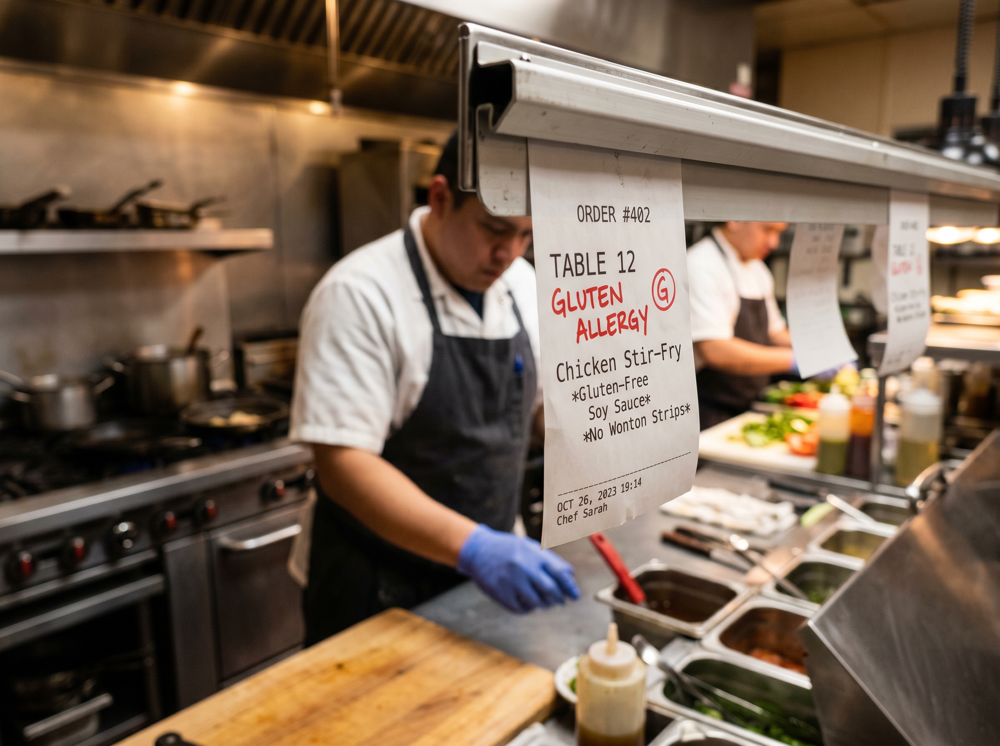

Harbor & Hearth Standard Operating Procedure (SOP)
SOP-FS-01
Food Safety · All Staff
Allergen Handling
Use this procedure any time a guest reports an allergy, intolerance, or ingredient restriction that could create a safety risk.
Owner note: this turns a long SOP staff will not read during service into fast key actions first, with the full procedure and photos underneath for training and reference.
Key Actions
- Stop and confirm the allergy before entering the order.
- Mark the ticket clearly in the POS and tell expo.
- Use clean hands, clean tools, and a clean prep surface.
- Run the dish separately and announce the allergy at delivery.
1
Purpose
To protect guests from allergen cross-contact and make sure FOH, expo, and kitchen staff use the same process every time.
2
Scope
Applies to hosts, servers, bartenders, line cooks, prep cooks, expo, and managers handling guest allergy requests.
3
Responsibilities
- All assigned staff must follow this SOP exactly as written during the applicable task or shift.
- The responsible manager or team (General Manager / Chef) is responsible for training staff, answering questions, and verifying that the procedure is followed.
- The shift lead or manager must stop the task and start corrective action when the standard cannot be met.
4
Definitions / Key Terms
| Term | Definition |
|---|
| SOP | Standard Operating Procedure; the approved method for completing this task. |
| Person in Charge | The manager or certified lead responsible for supervising the task and making food safety decisions during the shift. |
| Corrective Action | The required response when a step, limit, record, or safety standard is missed or cannot be verified. |
5
Materials / Equipment Needed
- Approved tools, equipment, utensils, and supplies required for the task.
- Required personal protective equipment, cleaning supplies, labels, logs, or checklists.
- Working hand sink, sanitizer, thermometer, or other food safety control equipment when applicable.
6
Procedure (Step-by-Step)
Step 1
Confirm the allergy
Repeat the allergy back to the guest. If the guest is unsure or asks whether an item is safe, pause and check with a manager or chef before promising.

Step 2
Mark and call the ticket
Enter the allergen in the POS modifier field. Tell expo out loud before the ticket is fired so the kitchen can control the setup.
Step 3
Build a clean setup
Wash hands, change gloves, sanitize the surface, and use clean utensils. Do not use shared garnish, sauce, fryer, or holding pans unless confirmed safe.
Step 4 - Deliver separately
Run the allergen dish separately from standard dishes. Announce the allergen dish clearly to the guest and confirm it before placing it down.
7
Safety & Compliance Considerations
Corrective Action
If a dish is unclear, contaminated, or run with the wrong plate, stop service, remake the item with a clean setup, and notify the manager.
8
Quality Control / Verification
- Confirm each step was completed in the required order and within the required standard.
- Manager or shift lead verifies the finished work before the station, item, or record is released for use.
- Correct and document any missed step, unsafe condition, incomplete record, or unclear responsibility.
9
Documentation & Records
- Complete any required checklist, log, label, or manager note tied to this SOP.
- Record corrective actions with the date, time, item or area affected, action taken, and manager initials.
- Keep completed records in the assigned location for manager review and inspection readiness.